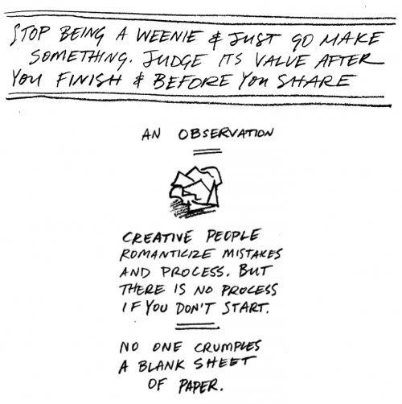

From a Frank Chimero jam: “How to Have an Idea”:
Stop being a weenie and just go make something. Judge its value after you finish and before you share.
An observation: Creative people romanticize mistakes and process. But there is no process if you don’t start. No one crumples a blank sheet of paper.